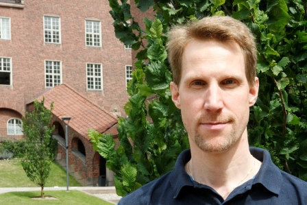

|

|
| E-post: |
jn snabel-a di punkt ku punkt dk or |
|---|
|
jakob punkt nordstrom snabel-a cs punkt lth punkt se |
|---|
|
|
|---|
|
Mobiltelefon:
|
070 742 21 98
|
|---|
|
|
|---|
|
Adress i Köpenhamn:
|
Datalogisk Institut, Københavns Universitet (DIKU)
Universitetsparken 1, rum 3-1-09
2100 København, DANMARK
|
|---|
|
Adress i Lund:
|
Institutionen för datavetenskap
Lunds universitet
Ole Römers väg 3, rum 2130a
221 00 Lund
|
|---|
|
This webpage is also available
in
English
(see flag
in upper left corner).
Jag har fortfarande mina
webbsidor på KTH,
men de håller på att flyttas hit.
Nyheter
-
I februari gav jag en introduktionsföreläsning (tutorial)
Pseudo-Boolean Solving and Optimization
på den inledande boot camp-workshopen för temaprogrammet
Satisfiability:
Theory, Practice, and Beyond
på
Simons Institute for the Theory of Computing på UC Berkeley.
Se
föreläsningsbilder
och
video
för föredraget, samt
bilder för den längre versionen
med förinspelad video för
del I,
del II,
del III,
och
del IV
av introduktionsföreläsningen.
-
Under vårterminen 2021 arrangeras virtuella seminarier varje vardag
kl 17:30 CET från tidigt i februari till mitten av maj som en del av
temaprogrammen
Satisfiability: Theory, Practice, and Beyond
och
Theoretical Foundations of Computer Systems
på
Simons Institute
for the Theory of Computing.
För att delta i seminarierna, gå till webbsidorna ovan för
programmen, bläddra ner till länkarna för olika "workshops" och
klicka på dem som ser intressanta ut, och klicka sedan på
registreringsknappen för varje workshop och fyll i formuläret.
-
Andra upplagan av
Handbook
of Satisfiability
har nu äntligen gått i tryck!
- Här är en dansk läsövning
Løsningens kunst
med en populärvetenskaplig beskrivning av en del av min forskning.
-
MIAO-gruppen
har fått en
vrålstart
i Köpenhamn och Lund!
-
Ett team där MIAO-medlemmarna Jo Devriendt och Stephan Gocht ingick
kom på andra plats i planning track och tredje plats i main track
i tävlingen
SAT Competition 2020.
Grattis, Jo och Stephan!
Yrkesaktiviteter
Jag är professor på
Datalogisk Institut
på
Köpenhamns universitet
och har även en professur på deltid på
datavetenskapliga institutionen
på
Lunds universitet.
Jag arbetade som biträdande lektor och sedan lektor på KTH åren 2011-2019.
Under perioden 2008-2010 var jag postdok-forskare på
Computer Science and
Artificial Intelligence Laboratory
på
Massachusetts Institute of Technology
med
Madhu Sudan
som värd.
Innan dess var jag doktorand hos
Johan Håstad
i Teorigruppen på KTH,
där jag
disputerade
i maj 2008.
För den som inte vill läsa hela
avhandlingen
finns istället en
kort populärvetenskaplig sammanfattning
och en
aningen längre populärvetenskaplig översikt
av min forskning under doktorandtiden.
Några länkar
|
{kind=link}